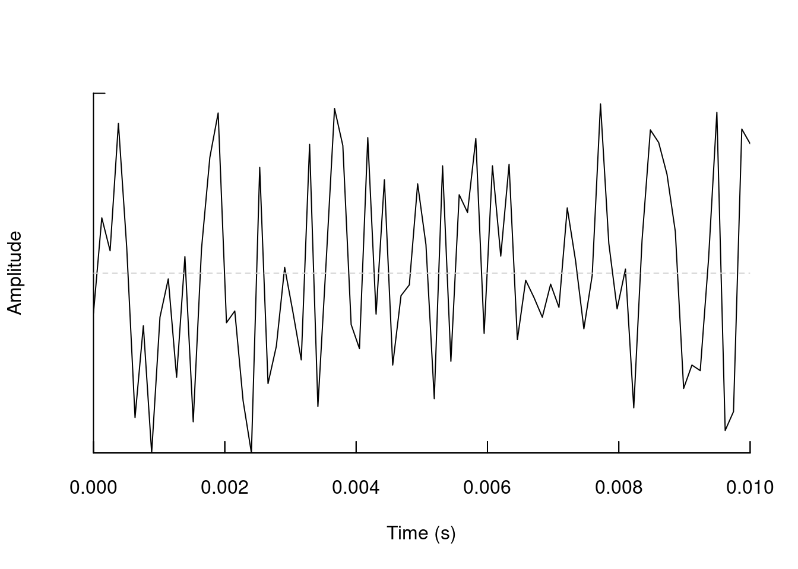

Sound
Objetives
Learn the basic aspects of sound as a physical phenomenom
Get familiar with how sound is represented as a digital object in R
Sound waves are characterized by compression and expansion of the medium as sound energy moves through it. There is also back and forth motion of the particles making up the medium:

taken from https://dosits.org
The variation in pressure that is perceived at a fixed point in space can be represented by a graph of pressure (amplitude) by time:

Sounds waves are typically quantified by their frequency (number of cycles per second, Hz) and amplitude (relative intensity).
Digitizing sound
0.1 Sampling frequency
Digitizing implies discretizing, which requires some sort of regular sampling. Sampling frequency refers to how many samples of the pressure level of the environment are taken per second. A 440 Hz sine wave recorded at 44100 Hz would have around 100 samples per cycle. This plot shows 2 cycles of a 440 Hz sine wave sampled (vertical dotted lines) at 44100 Hz:

0.2 Nyquist frequency
Sampling should be good enough so the regularity of the sine wave can be reconstructed from the sampled data. Low sampling frequencies of a high frequency sine wave might not be able to provide enough information. For instance, the same 440 Hz sine wave sampled at 22050 Hz looks like this:

As you can see way less samples are taken per unit of time. The threshold at which samples cannot provide a reliable estimate of the regularity of a sine wave is called Nyquist frequency and corresponds to half of the frequency of the sine wave. This is how the 2 cycles of the 440 Hz would look like when sampled at its Nyquist frequency (sampling frequency of 880 Hz):

0.3 Quantization
Once we know at which point amplitude samples will be taken we just need to measure it. This process is called quantization. The range of amplitude values is discretized in a number of intervals equals to 2 ^ bits. Hence, it involves some rounding of the actual amplitude values and some data loss. This is the same 440 Hz sine wave recorded at 44100 kHz quantized at 2 bits (2^2 = 4 intervals):

Rounding and data loss is more obvious if we bind the sampled points with lines:

This is the same signal quantized at 3 bits (2^3 = 8 intervals):

4 bits (2^4 = 16 intervals):

.. and 8 bits (2^8 = 256 intervals):

At this point quantization involves very little information loss. 16 bits is probably the most common dynamic range used nowadays. As you can imagine, the high number of intervals (2^16 = 65536) allows for great precision in the quantization of amplitude.
1 Sound in R
Sound waves can be represented by 3 kinds of R objects:
- Common classes (numerical vector, numerical matrix)
- Time series classes (ts, mts)
- Specific sound classes (Wave, sound and audioSample)
1.1 Non-specific classes
1.1.1 Vectors
Any numerical vector can be treated as a sound if a sampling frequency is provided. For example, a 440 Hz sinusoidal sound sampled at 8000 Hz for one second can be generated like this:
Code
library(seewave)
# create sinewave at 440 Hz
s1 <- sin(2 * pi * 440 * seq(0, 1, length.out = 8000))
is.vector(s1)[1] TRUECode
mode(s1)[1] "numeric"
These sequences of values only make sense when specifying the sampling rate at which they were created:
Code
oscillo(s1, f = 8000, from = 0, to = 0.01)
1.1.2 Matrices
You can read any single column matrix:
Code
s2 <- as.matrix(s1)
is.matrix(s2)[1] TRUECode
dim(s2)[1] 8000 1Code
oscillo(s2, f = 8000, from = 0, to = 0.01)
If the matrix has more than one column, only the first column will be considered:
Code
x <- rnorm(8000)
s3 <- cbind(s2, x)
is.matrix(s3)[1] TRUECode
dim(s3)[1] 8000 2Code
oscillo(s3, f = 8000, from = 0, to = 0.01)
1.1.3 Time series
The class ts and related functions ts(), as.ts(), is.ts() can also be used to generate sound objects in R. Here the command to similarly generate a series of time is shown corresponding to a 440 Hz sinusoidal sound sampled at 8000 Hz for one second:
Code
s4 <- ts(data = s1, start = 0, frequency = 8000)
str(s4) Time-Series [1:8000] from 0 to 1: 0 0.339 0.637 0.861 0.982 ...
To generate a random noise of 0.5 seconds:
Code
s4 <- ts(data = runif(4000, min = -1, max = 1), start = 0, end = 0.5, frequency = 8000)
str(s4) Time-Series [1:4001] from 0 to 0.5: -0.221 0.306 0.124 0.827 0.14 ...
The frequency() and deltat() functions return the sampling frequency (\(f\)) and the time resolution (\(Delta t\)) respectively:
Code
frequency(s4)[1] 8000Code
deltat(s4)[1] 0.000125
As the frequency is incorporated into the ts objects, it is not necessary to specify it when used within functions dedicated to audio:
Code
oscillo(s4, from = 0, to = 0.01)
In the case of multiple time series, seewave functions will consider only the first series:
Code
s5 <- ts(data = s3, f = 8000)
class(s5)[1] "mts" "ts" "matrix" "array" Code
oscillo(s5, from = 0, to = 0.01)
1.2 Dedicated R classes for sound
There are 3 kinds of objects corresponding to the wav binary format or themp3 compressed format:
Waveclass of the package tuneRsoundclass of the package phonToolsAudioSampleclass of the package audio
1.2.1 Wave class (tuneR)
The Wave class comes with the tuneR package. This S4 class includes different “slots” with the amplitude data (left or right channel), the sampling frequency (or frequency), the number of bits (8/16/24/32) and the type of sound (mono/stereo). High sampling rates (> 44100 Hz) can be read on these types of objects.
The function to import .wav files from the hard drive is readWave:
Code
# load packages
library(tuneR)
s6 <- readWave("./examples/Phae.long1.wav")
We can verify the class of the object like this:
Code
# object class
class(s6)[1] "Wave"
attr(,"package")
[1] "tuneR"
S4 objects have a structure similar to lists but use ‘@’ to access each position (slot):
Code
# structure
str(s6)Formal class 'Wave' [package "tuneR"] with 6 slots
..@ left : int [1:56251] 162 -869 833 626 103 -2 43 19 47 227 ...
..@ right : num(0)
..@ stereo : logi FALSE
..@ samp.rate: int 22500
..@ bit : int 16
..@ pcm : logi TRUECode
# extract 1 position
s6@samp.rate[1] 22500
“Pulse-code modulation (PCM) is a method used to digitally represent sampled analog signals. It is the standard form of digital audio. In a PCM stream, the amplitude of the analog signal is sampled regularly at uniform intervals, and each sample is quantized to the nearest value within a range of digital steps” (Wikipedia).
The samples come in the slot ‘@left’:
Code
# samples
s6@left[1:40] [1] 162 -869 833 626 103 -2 43 19 47 227 -4 205 564 171 457
[16] 838 -216 60 76 -623 -213 168 -746 -248 175 -512 -58 651 -85 -213
[31] 586 40 -407 371 -51 -587 -92 94 -527 40
The number of samples is given by the duration and the sampling rate.
Exercise
- How can we calculate the duration of the
waveobject using the information in the object?
- Extract the first second of audio from the object
s6using indexing (and squared brackets)
An advantage of using readWave() is the ability to read specific segments of sound files, especially useful with long files. This is done using the from andto arguments and specifying the units of time with the units arguments. The units can be converted into “samples”, “minutes” or “hours”. For example, to read only the section that begins in 1s and ends in 2s of the file “Phae.long1.wav”:
Code
s7 <- readWave("./examples/Phae.long1.wav", from = 1, to = 2, units = "seconds")
s7
Wave Object
Number of Samples: 22500
Duration (seconds): 1
Samplingrate (Hertz): 22500
Channels (Mono/Stereo): Mono
PCM (integer format): TRUE
Bit (8/16/24/32/64): 16
The .mp3 files can be imported to R although they are imported inWave format. This is done using the readMP3() function:
Code
s7 <- readMP3("./examples/Phae.long1.mp3")
s7
Wave Object
Number of Samples: 56448
Duration (seconds): 2.56
Samplingrate (Hertz): 22050
Channels (Mono/Stereo): Mono
PCM (integer format): TRUE
Bit (8/16/24/32/64): 16
To obtain information about the object (sampling frequency, number of bits, mono/stereo), it is necessary to use the indexing of S4 class objects:
Code
s7@samp.rate[1] 22050Code
s7@bit[1] 16Code
s7@stereo[1] FALSE
A property that does not appear in these calls is that readWave does not normalize the sound. The values that describe the sound will be included between \(\pm2^{bit} - 1\):
Code
range(s7@left)[1] -32768 32767
Exercise
The function Wave can be used to create wave objects.
Run the example code in the function documentation
Plot the oscillogram for the first 0.01 s of ‘Wobj’
Note that the function
sineprovides a shortcut that can be used to create wave object with a sine wave. Check out other similar functions described in thesinefunction documentation. Try 4 of these alternative functions and plot the oscillogram of the first 0.01 s for each of them.
The function read_sound_files from warbleR is a wrapper over several sound file reading functions, that can read files in ‘wav’, ‘mp3’, ‘flac’ and ‘wac’ format:
Code
library(warbleR)
# wave
rsf1 <- read_sound_file("Phaethornis-eurynome-15607.wav", path = "./examples")
class(rsf1)[1] "Wave"
attr(,"package")
[1] "tuneR"Code
# mp3
rsf2 <- read_sound_file("Phaethornis-striigularis-154074.mp3", path = "./examples")
class(rsf2)[1] "Wave"
attr(,"package")
[1] "tuneR"Code
# flac
rsf3 <- read_sound_file("Phae.long1.flac", path = "./examples")
class(rsf3)[1] "Wave"
attr(,"package")
[1] "tuneR"Code
# wac
rsf4 <- read_sound_file("recording_20170716_230503.wac", path = "./examples")
class(rsf4)[1] "Wave"
attr(,"package")
[1] "tuneR"
The function can also read recordings hosted in an online repository:
Code
rsf5 <- read_sound_file(X = "https://xeno-canto.org/35340/download")
class(rsf5)[1] "Wave"
attr(,"package")
[1] "tuneR"Code
# rsf6 <- read_sound_file(X =
# 'https://github.com/maRce10/NMSU_BIR_2024/raw/master/examples/Phae.long1.flac')
# class(rsf6)
1.3 Class sound (phonTools)
The loadsound() function of phonTools also imports ‘wave’ sound files into R, in this case as objects of class sound:
Code
library(phonTools)
s8 <- loadsound("./examples/Phae.long1.wav")
s8
Sound Object
Read from file: ./examples/Phae.long1.wav
Sampling frequency: 22500 Hz
Duration: 2500.044 ms
Number of Samples: 56251 Code
str(s8)List of 5
$ filename : chr "./examples/Phae.long1.wav"
$ fs : int 22500
$ numSamples: num 56251
$ duration : num 2500
$ sound : Time-Series [1:56251] from 0 to 2.5: 0.00494 -0.02652 0.02542 0.0191 0.00314 ...
- attr(*, "class")= chr "sound"
This function only imports files with a dynamic range of 8 or 16 bits.
1.4 Class audioSample (audio)
The audio package is another option to handle .wav files. The sound can be imported using the load.wave() function. The class of the resulting object is audioSample which is essentially a numerical vector (for mono) or a numerical matrix with two rows (for stereo). The sampling frequency and resolution are saved as attributes:
Code
library(audio)
s10 <- load.wave("./examples/Phae.long1.wav")
head(s10)sample rate: 22500Hz, mono, 16-bits
[1] 4.943848e-03 -2.652058e-02 2.542114e-02 1.910400e-02 3.143311e-03
[6] -6.103702e-05Code
s10$rate[1] 22500Code
s10$bits[1] 16
The main advantage of the audio package is that the sound can be acquired directly within an R session. This is achieved first by preparing a NAs vector and then using therecord() function. For example, to obtain a mono sound of 5 seconds sampled at 16 kHz:
Code
s11 <- rep(NA_real_, 16000 * 5)
record(s11, 16000, 1)
A recording session can be controlled by three complementary functions: pause(), rewind(), and resume().
1.5 Export sounds from R
For maximum compatibility with other sound programs, it may be useful to save a sound as a simple .txt file. The following commands will write a “tico.txt” file:
Code
data(tico)
export(tico, f = 22050)
1.6 Format ‘.wav’
tuneR and audio have a function to write .wav files: writeWave() and save.wave() respectively. Within seewave, the savewav() function, which is based on writeWave(), can be used to save data in .wav format. By default, the object name will be used for the name of the .wav file:
Code
savewav(tico)
1.7 Format ‘.flac’
Free Lossless Audio Codec (FLAC) is a file format for lossless audio data compression. FLAC reduces bandwidth and storage requirements without sacrificing the integrity of the audio source. Audio sources encoded in FLAC are generally reduced in size from 40 to 50 percent. See the flac website for more details (flac.sourceforge.net).
The .flac format cannot be used as such with R. However, the wav2flac()function allows you to call the FLAC software directly from the console. Therefore, FLAC must be installed on your operating system. If you have a .wav file that you want to compress in .flac, call:
Code
wav2flac(file = "./examples/Phae.long1.wav", overwrite = FALSE)
To compress a .wav file to a .flac format, the argument reverse = TRUE must be used:
Code
wav2flac("Phae.long1.flac", reverse = TRUE)
This table, taken from Sueur (2018), summarizes the functions available to import and export sound files in R. The table is incomplete since it does not mention the functions of the phonTools package:

Exercise
How does the sampling rate affect the size of an audio file? (hint: create 2 sounds files with the same data but different sampling rates; use
sine())How does the dynamic range affect the size of an audio file?
Use the
system.time()function to compare the performance of the different functions to import audio files in R. For this use the file “LBH.374.SUR.wav” (Long-billed hermit songs) which lasts about 2 min
The following code creates a plot similar to oscillo but using dots instead of lines:
Code
# generate sine wave
wav <- sine(freq = 440, duration = 500, xunit = "samples", samp.rate = 44100)
# plot
plot(wav@left)
- Use the function
downsample()to reduce the sampling rate of ‘wav’ (below 44100) and plot the output object. Decrease the sampling rate until you cannot recognize the wave pattern from the original wave object. Try several values so you get a sense at which sampling rate this happens.
1.8 References
Sueur J, Aubin T, Simonis C. 2008. Equipment review: seewave, a free modular tool for sound analysis and synthesis. Bioacoustics 18(2):213–226.
Sueur, J. (2018). Sound Analysis and Synthesis with R.
Sueur J. (2018). I/O of sound with R. seewave package vignette. url: https://cran.r-project.org/web/packages/seewave/vignettes/seewave_IO.pdf
Session information
R version 4.3.2 (2023-10-31)
Platform: x86_64-pc-linux-gnu (64-bit)
Running under: Ubuntu 22.04.2 LTS
Matrix products: default
BLAS: /usr/lib/x86_64-linux-gnu/blas/libblas.so.3.10.0
LAPACK: /usr/lib/x86_64-linux-gnu/lapack/liblapack.so.3.10.0
locale:
[1] LC_CTYPE=en_US.UTF-8 LC_NUMERIC=C
[3] LC_TIME=en_US.UTF-8 LC_COLLATE=en_US.UTF-8
[5] LC_MONETARY=en_US.UTF-8 LC_MESSAGES=en_US.UTF-8
[7] LC_PAPER=en_US.UTF-8 LC_NAME=C
[9] LC_ADDRESS=C LC_TELEPHONE=C
[11] LC_MEASUREMENT=en_US.UTF-8 LC_IDENTIFICATION=C
time zone: America/Costa_Rica
tzcode source: system (glibc)
attached base packages:
[1] stats graphics grDevices utils datasets methods base
other attached packages:
[1] audio_0.1-11 phonTools_0.2-2.2 warbleR_1.1.30 NatureSounds_1.0.4
[5] tuneR_1.4.6 knitr_1.46 seewave_2.2.3
loaded via a namespace (and not attached):
[1] viridis_0.6.5 utf8_1.2.4 generics_0.1.3 bitops_1.0-7
[5] stringi_1.8.3 digest_0.6.35 magrittr_2.0.3 evaluate_0.23
[9] grid_4.3.2 fastmap_1.1.1 jsonlite_1.8.8 brio_1.1.4
[13] formatR_1.14 gridExtra_2.3 fansi_1.0.6 viridisLite_0.4.2
[17] scales_1.3.0 pbapply_1.7-2 cli_3.6.2 rlang_1.1.3
[21] fftw_1.0-8 munsell_0.5.0 withr_3.0.0 yaml_2.3.8
[25] tools_4.3.2 parallel_4.3.2 dplyr_1.1.4 colorspace_2.1-0
[29] ggplot2_3.5.1 bioacoustics_0.2.8 vctrs_0.6.5 R6_2.5.1
[33] proxy_0.4-27 lifecycle_1.0.4 dtw_1.23-1 stringr_1.5.1
[37] htmlwidgets_1.6.4 MASS_7.3-55 pkgconfig_2.0.3 pillar_1.9.0
[41] gtable_0.3.4 moments_0.14.1 glue_1.7.0 Rcpp_1.0.12
[45] xfun_0.43 tibble_3.2.1 tidyselect_1.2.0 rstudioapi_0.15.0
[49] rjson_0.2.21 htmltools_0.5.8.1 rmarkdown_2.26 testthat_3.2.1
[53] signal_1.8-0 compiler_4.3.2 RCurl_1.98-1.14